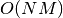
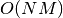

7. 计算效能(Computational Performance)¶
对于有些应用估计量的性能(主要是预测延迟和吞吐耗时)至关重要。可能训练阶段的耗时也需要考虑但是通常这步都包含在模型建立中(经常是离线进行)，所以并不是特别重要。
这里我们回顾一系列 scikit-learn 估计量的在不同情境下应用的性能数量级并针对性能瓶颈提供一系列的建议。
预测延迟（Prediction latency）通常用预测一个新样本花费的时间来测量(比如多少毫秒)。不同条件下，延迟通常会被视作一个分布，工程师们主要关注在特定百分比下的延迟(比如百分之九十)。
预测吞吐量（Prediction throughput）指给定的时间内能够预测的新样本数量(比如每秒预测数量)。
关于计算效能的一个重要部分是提高计算效能可能减小预测的准确率。事实上，更简单的模型(比如线性相较于非线性或者更少的参数)通常运行的更快，但是并不总是能够达到到更复杂模型可以实现的一些数据的具体性质
7.1. 预测延迟（Prediction latency）¶
在使用或者选择具体的机器学习工具时，最直接的考量是在实际的生产环境中的延迟有多少。
- 主要影响预测延迟的因素有
- 特征数量
- 输入数据的表示形式和稀疏性
- 模型的复杂性
- 提取特征过程
最后一个主要参数是预测模型，是选择整体预测还是单个预测。
7.1.1. 整体预测模式与单个预测模式Bulk versus Atomic mode)¶
总体上说，整体预测模式(同时预测多个实例)总是更快。这来自多个原因(比如分支可预测性，CPU缓存，线性代数库的优化等)。这里我们观察一个只有少量特征且这些特征和具体的预测量选择无关的场景，整体模式总是更快，有时候甚至可以快上一到两个数量级:
为了比较你期望的不同预测量，你可以改变这个例子中 n_features 参数:
Prediction Latency. 这可以提供给你关于预测延迟数量级的一个直观估计。
7.1.2. 特征数量的影响¶
显然，随着特征数量的增加，每一个例子占用的内存会增加。事实上，对于一个有  个特征
个特征  个实例的矩阵，空间复杂度通常是  。从计算的角度说，这也意味着基本操作数量(比如线性模型中的矢量－举证乘法)的增加。下图展示了预测延迟随着特征数量的变化:
个实例的矩阵，空间复杂度通常是  。从计算的角度说，这也意味着基本操作数量(比如线性模型中的矢量－举证乘法)的增加。下图展示了预测延迟随着特征数量的变化:

总体而言，最低增长的估计是，你可以预期预测时间随着特征数目增加线性增加(取决于具体的内存布局和估计量，非线性的例子也是存在的)。
7.1.3. 输入数据的表示形式的影响¶
Scipy 提供了稀疏矩阵的数据结构来优化稀疏数据的存储。稀疏矩阵数据结构特点是不存储0，所以对于稀疏数据可以使用更少的内存。 稀疏表示中一个非零值 (CSR or CSC) 平均而言仅仅需要占用一个32位整数的位置数据 + 64位浮点数的数据值 + 附加32位整数的矩阵行或列信息。在密集或者稀疏的线性模型中使用稀疏表示可以加快预测，因为只有非零值需要进行点积计算并带入预测。所以，如果你的数据在1e6维空间只有100个非零值的话，你只需要进行100次乘法或者加法计算而不是1e6。
然而针对密集表示的计算更多的依赖向量操作的优化和 BLAS 库的多线程操作，因此并不浪费CPU缓存。所以在具有经过优化的 BLAS 库实现的多核计算机上，只有很高的稀疏性(一般而言最多只能有10%的非零值，具体标准依赖于硬件性能)，稀疏表示才比密集表示更快。
下面是关于稀疏性的一个测试代码:
def sparsity_ratio(X):
return 1.0 - np.count_nonzero(X) / float(X.shape[0] * X.shape[1])
print("input sparsity ratio:", sparsity_ratio(X))
一般而言，如果你的稀疏性大于90%，使用稀疏表示更快。参考 Scipy 关于矩阵格式 documentation 的文档获得更多如何构建或者将你的数据转化为稀疏矩阵格式的信息。但是更多的时候， CSR 格式和 CSC 格式工作的最好。
7.1.4. 模型复杂度的影响¶
通常而言，模型的复杂度增加，模型的预测能力和预测延迟都会相应增加。增加预测能力通常是我们期望的，但是对于很多的应用我们并不希望过多的增加预测延迟。 现在我们针对不同的监督式模型回顾这一思想。
对于 sklearn.linear_model (比如 Lasso, ElasticNet,
SGDClassifier/Regressor, Ridge & RidgeClassifier,
PassiveAgressiveClassifier/Regressor, LinearSVC, LogisticRegression 等) 预测时的决策函数是一样的 (系数和相应值的点积) ，所以预测延迟都一样。
下面是一个例子
sklearn.linear_model.stochastic_gradient.SGDClassifier 使用
elasticnet 惩罚. 规范化由 alpha 参数控制. 在大 alpha 参数的条件下,
可以增大 关于 elasticnet 的 ``l1_ratio``来提高不同层次模型系数的稀疏性。这里更高的稀疏性可以理解为更低的模型复杂度，因为我们只需要更少的参数就能够描述模型。当然参数的稀疏性反过来又会影响预测的时间，因为稀疏系数矩阵的点积大致和非零值数目成正比。

对于非线性核函数的 sklearn.svm 算法,预测延迟和支持向量的数目成正比(越少支持向量越快)。在SVC 或 SVR 模型中，延迟和吞吐应该随着支持向量的数目非对称的线性增加。因为核函数被用来计算输入向量在每个支持向量上的投影，所以核函数会影响延迟。下图中关于 sklearn.svm.classes.NuSVR 的 nu 参数可以用来调节支持向量数目。

对于 sklearn.ensemble 基于树的算法 (比如 RandomForest, GBT,
ExtraTrees 等) 树的数目和深度是最重要的参数。延迟应是树的数目的线性函数。在下面的例子中，我们直接使用 sklearn.ensemble.gradient_boosting.GradientBoostingRegressor 的 n_estimators 参数代表树的数目。

需要提出的是，正如上面已经提到的那样，减小模型复杂度会降低模型的准确率。比如，非线性的划分问题可以由快速的线性模型解决但是该线性模型的预测准确度会有损失。
7.2. 预测吞吐量¶
另一个重要的值得关注的衡量系统性能的标准是吞吐量，比如一定时间内能过给出的预测数目。下面是 Prediction Latency 示例给出的一系列估计量关于吞吐量的基准测试:

这些吞吐量都是单进程给出。一个明显提高吞吐量的方法是使用同样模型的多进程(因为 Python GIL 的限制，所以多是多进程)。也可以增加更多机器来分散负载。更详细解释超出本文档范围。
7.3. 建议和技巧¶
7.3.1. 线性代数库¶
因为 scikit-learn 极度依赖 Numpy/Scipy 和线性代数库，所以通常关注不同版本的函数库对于提高计算效能非常有意义。最基本的，你应该保证 Numpy 使用的是经过优化的 BLAS / LAPACK 函数库.
并不是所有的模型都会从经过优化的 BLAS 和 Lapack 实现收益。比如，基于(随机)决策树的模型通常并不依赖 BLAS , 支持向量机(SVC, SVR,
NuSVC, NuSVR)也并不依赖。但是依赖
BLAS DGEMM 调用 (通过 numpy.dot) 的线性模型通常会比使用不经过优化的 BLAS 库获得数量级上的极大加速。
你可以通过如下命令检查你的 NumPy / SciPy /scikit-learn 使用的 BLAS / LAPACK 实现:
from numpy.distutils.system_info import get_info
print(get_info('blas_opt'))
print(get_info('lapack_opt'))
- 优化的 BLAS / LAPACK 实现包括:
- Atlas (需要针对机器的硬件细节微调参数后重新构建)
- OpenBLAS
- MKL
- Apple Accelerate and vecLib frameworks (OSX only)
更多信息可以参考 Scipy install page 和来自 Daniel Nouri 针对 Debian / Ubuntu 的详细安装指导博文 blog post 。
Warning
多线程 BLAS 库(Multithreaded BLAS libraries) 有时会和 Python 自带的
multiprocessing 模块冲突, 比如 GridSearchCV 和
大多数带有 n_jobs 参数的估计量 (除 SGDClassifier, SGDRegressor, Perceptron,
PassiveAggressiveClassifier 和基于树的方法比如随机森林). 当 Apple’s Accelerate 和 OpenBLAS 构建时选择支持 OpenMP 的时候该冲突也是存在的。
除了 scikit-learn, NumPy 和 SciPy 也在内部使用 BLAS 正如早前所解释的。
当你通过 n_jobs>1 或 n_jobs=-1 调用子进程的时候,确保你使用的是单线程的 BLAS 库 (single-threaded BLAS library), 或者设置 n_jobs=1,或者升级到使用新版本 multiprocessing 的 Python 3.4，这可以避免相应的问题。
7.3.2. 模型压缩¶
目前 scikit-learn 中的模型压缩值考虑线性模型。这儿特指控制模型的稀疏性(比如，非零坐标在模型向量中的数目)。通常将模型稀疏性和输入数据的稀疏表示结合是一个很好的方法。
下面是关于 sparsify() 方法的简单示例:
clf = SGDRegressor(penalty='elasticnet', l1_ratio=0.25)
clf.fit(X_train, y_train).sparsify()
clf.predict(X_test)
在这个例子中我们更倾向 elasticnet 惩罚，因为它是在模型紧致性和预测能力之间的很好的平衡。通过进一步调节 l1_ratio 参数 (联合正则化参数 alpha) 来控制该平衡.
一个常用的基准测试 benchmark 显示当模型和输入数据都是稀疏形式（相应的非零值比例是 0.000024 和 0.027400 )的时候，可以实现超过 30% 的延迟下降。 使用不同大小和稀疏性的数据可能导致不同的结果。进一步而言，稀疏化可以减小在生产服务器上部署模型时候的内存占用。
7.3.3. 模型重构¶
模型重构指只选择部分特征来拟合模型。换言之，如果模型在训练阶段可以丢弃一部分特征，我们就可以在输入数据中去除掉相应的输入。首先，和模型无关，这降低了内存使用相应的减小了延迟。同时，该操作也允许在运行的时候显式丢弃特定的特征，一旦在前一次运行中我们知道该特征可以被丢弃。最后，通过不收集和构建丢弃特征的数据，这可以在从上游数据库提取数据和特征提取层中减少处理时间和I/O占用。比如对于来自数据库的原始数据，我们可以使用更加简单和快速的查询语句或者通过返回更轻量级的数据记录来降低I/O占用。目前，在 scikit-learn 中重构需要受到实现。在稀疏输入的例子中(特别是针对 ``CSR`` 格式),我们可以通过不产生相应的特征实现模型重构，只要将相应的特征列留空即可。